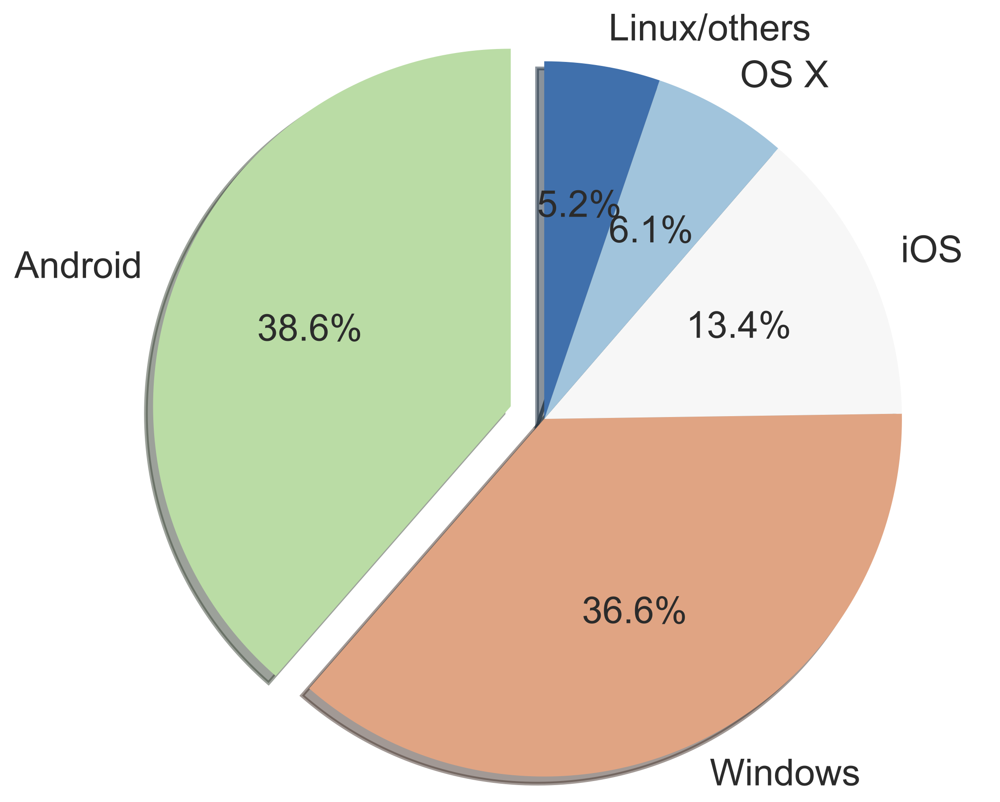
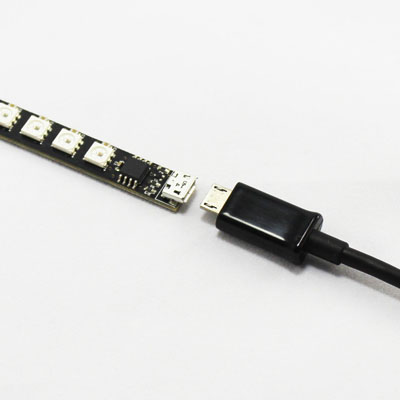

Objetivo
Estudio de aspectos avanzados de sistemas operativos
Kernel Linux: evolución desde 1991
Líneas de código de las distintas versiones

Interactive map of the Linux kernel

Abstracciones comunes del kernel
- Estructuras de datos del kernel
- Implementación de llamadas al sistema
- Gestión de memoria dinámica
kmalloc(), vmalloc(), kfree(), vfree()
- Mecanismos para diferir el trabajo
- Temporizadores del kernel
- Pseudo sistemas de ficheros: /proc, /sys
- Mecanismos de sincronización en el kernel
- …
Uso de sistemas operativos
Android OS está basado en el kernel Linux

Android: a Linux-based OS

Programa
- Módulo 1: Introducción
- Historia Unix/Linux y Estructura del SO
- Uso avanzado de módulos del kernel Linux
- Módulo 2: Llamadas al sistema
- Compilación del kernel Linux
- Módulo 3: Drivers USB
- Módulo 4: Gestión de Procesos
- Gestión de procesos en Linux
- Mecanismos de sincronización del kernel
- Módulo 5: Gestión de interrupciones y trabajos diferidos
- Softirqs, Tasklets, Workqueues y Temporizadores del kernel
- Módulo 6: Arquitectura Interna de Android
- Introducción a Android: Componentes, Android vs. GNU/Linux
- Procesos en Android, Kernel y Native Userspace
Prácticas
- Sobre una Máquina Virtual de GNU/Linux
- Programación en “C” en modo kernel
- … casi siempre con módulos cargables del núcleo
- 5 prácticas
- Uso avanzado de módulos del kernel
- Implementación de llamadas al sistema
- Desarrollo de driver para un dispositivo USB
- Gestión de procesos y sincronización en el kernel
- Gestión de interrupciones y trabajos diferidos
Prácticas
- En la práctica 3 se desarrollará un driver en Linux para el dispositivo Blinkstick Strip (USB)

 
Método de evaluación
- Dos modalidades a elegir
- Examen final: NotaFinal=NotaExamen
- Evaluación continua: